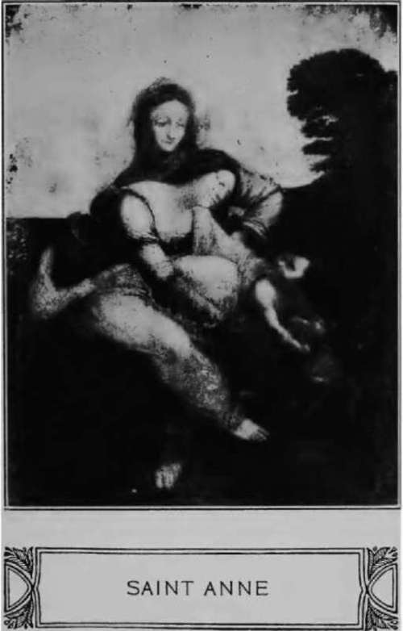
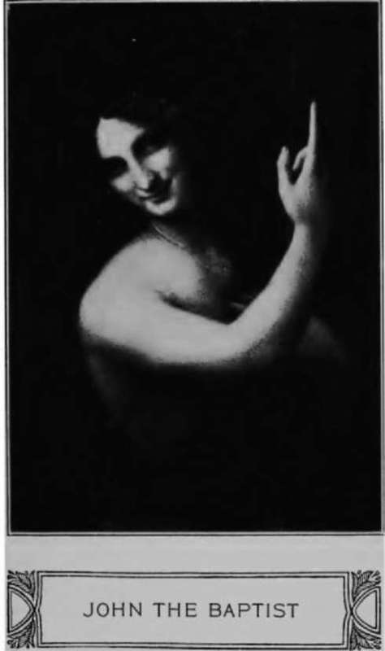

Chapter IV. Continued
Description
This section is from the book "Leonardo Da Vinci: A Psychosexual Study Of An Infantile Reminiscence", by Sigmund Freud. Also available from Amazon: Leonardo da Vinci: A Psychosexual Study of an Infantile Reminiscence.
Chapter IV. Continued
But the case could have been different. The need for a deeper reason for the fascination which the smile of Gioconda exerted on die artist from which he could not rid himself has been felt by more dian one of his biographers. W. Pater, who sees in the picture of Monna Lisa the embodiment of the entire erotic experience of modern man, and discourses so excellently on "that unfathomable smile always with a touch of something sinister in it, which plays over all Leonardo's work," leads us to another track when he says:""
"Besides, die picture is a portrait. From childhood we see this image defining itself on die fabric of his dream; and but for express historical testimony, we might fancy that this was but his ideal lady, embodied and beheld at last."
Herzfeld surely must have had something similar in mind when stating that in Monna Lisa Leonardo encountered himself and diere-fore found it possible to put so much of his own nature into the picture, "whose features from time immemorial have been imbedded with mysterious sympadiy in Leonardo's soul.""1
Let us endeavor to clear up these intimations. It was quite possible that Leonardo was fascinated by the smile of Monna Lisa, because it had awakened something in him which had slumbered in his soul for a long time, in all probability an old memory. This memory was of sufficient importance to stick to him once it had been aroused; he was forced continually to provide it with new expression. The assurance of Pater diat we can see an image like that of Monna Lisa defining itself from Leonardo's childhood on die fabric of his dreams, seems wordiy of belief and deserves to be taken literally.
Vasari mentions as Leonardo's first artistic endeavors, "heads of women who laugh.""2 The passage, which is beyond suspicion, as it is not meant to prove anything, reads more precisely as follows:"1 "He formed in his youth some laughing feminine heads out of lime, which have been reproduced in plaster, and some heads of children, which were as beautiful as if modeled by die hands of a mas-ter. . . .
Thus we discover diat his practice of ait began with the representation of two kinds of objects, which would perforce remind us of the two kinds of sexual objects which we have inferred from die analysis of his vulture fantasy. If the beautiful children's heads were reproductions of his own childish person, then the laughing women were nothing else but reproductions of Caterina, his mother, and we are beginning to have an inkling of the possibility that his mother possessed that mysterious smile which he lost, and which fascinated him so much when he found it again in the Florentine lady."'
The painting of Leonardo which in point of time stands nearest to the Monna Lisa is the so-called Saint Anne of the Louvre, representing Saint Anne, Mary and the Christ child. It shows the Leonardesque smile most beautifully portrayed in die two feminine heads. It is impossible to find out how much earlier or later than the portrait of Monna Lisa Leonardo began to paint this picture. As both works extended over years, we may well assume that they occupied the master simultaneously. But it would best harmonize widi our expectation if precisely the absorption in the features of Monna Lisa would have instigated Leonardo to form die composition of Saint Anne from his fantasy. For if die smile of Gioconda had conjured up in him die memory of his mother, we would naturally understand that he was first urged to produce a glorification of motherhood, and to give back to her die smile he found in that prominent lady. We may dius allow our interest to glide over from the portrait of Monna Lisa to this other hardly less beautiful picture, now also in the Louvre.
Saint Anne with the daughter and grandchild is a subject seldom treated in die Italian art of painting; at all events Leonardo's representation differs widely from all diat is odi-erwise known. Mudier states:65
"Some masters like Hans Fries, the older Holbein, and Girolamo dei Libri, made Anne sit near Mary and placed the child between the two. Others like Jakob Cornelicz in his Berlin pictures, represented Saint Anne as holding in her aim die small figure of Mary upon which sits the still smaller figure of the Christ child." In Leonardo's picture Mary sits on her mother's lap, bent forward and is stretching out both arms after the boy who plays with a little lamb, and must have slightly maltreated it. The grandmother has one of her unconcealed arms propped on her hip and looks down on both with a blissful smile. The grouping is certainly not quite unconstrained. But the smile which is playing on the lips of both women, although unmistakably the same as in the picture of Monna Lisa, has lost its sinister and mysterious character; it expresses a calm blissfulness."
On becoming somewhat engrossed in this picture it suddenly dawns upon the spectator that only Leonardo could have painted this picture, as only he could have formed die vulture fantasy. This picture contains die synthesis of die history of Leonardo's childhood, the details of which are explainable by the most intimate impressions of his life. In his father's home he found not only the kind step-mother Donna Albiera, but also the grandmodier, his father's mother, Monna Lucia, who we will assume was not less tender to him than grand-modiers are wont to be. This circumstance must have furnished him widi the facts for die representation of a childhood guarded by a modier and grandmother. Another striking feature of the picture assumes still greater significance. Saint Anne, die mother of Mary and the grandmodier of the boy, who must have been a matron, is depicted here as perhaps somewhat more mature and more serious than Saint Mary, but still as a young woman of unfaded beauty. As a matter of fact Leonardo gave the boy two mothers, the one who stretched out her arms after him and another who is seen in the background, both are represented widi the blissful smile of maternal happiness. This peculiarity of the picture has not failed to excite die wonder of the authors. Mutiier, for instance, believes that Leonardo could not bring himself to paint old age, folds and wrinkles, and dierefore portrayed Anne as a woman of radiant beauty. Whedier one can be satisfied with this explanation is a question. Other writers have taken occasion to deny generally die sameness of age of modier and daughter.17 However, Mudier's tentative explanation is sufficient proof of the fact that the impression of Saint Anne's youthful appearance was furnished by the picture and is not an imagining produced by a bias.
Leonardo's childhood was precisely as remarkable as diis picture. He had two modiers, the first his true mother, Caterina, from whom he was torn away between the age of three and five years, and a young tender step-mother, Donna Albiera, his father's wife. By connecting this fact of his childhood with die one mentioned above and condensing them into a uniform fusion, the composition of Saint Anne, Mary and die Child, formed itself within him. The maternal form furdier away from the boy designated as grandmother, corresponds in appearance and in spatial relation to the boy, with the real first modier, Caterina. With die blissful smile of Saint Anne die artist actually disavowed and concealed the envy which the unfortunate mother felt when she was forced to give up her son to her more aristocratic rival, as as she had done with her lover.
Our feeling that the smile of Monna Lisa del Gioconda awakened in the man the memory of the mother of his first years of childhood would dius be confirmed by another work of Leonardo's. Following the production of Monna Lisa, Italian artists depicted in Madonnas and prominent ladies the humble dipping of the head and the peculiar blissful smile of the poor peasant girl Caterina, who brought to the world die noble son who was destined to paint, investigate, and suffer.
When Leonardo succeeded in reproducing in the face of Monna Lisa the double sense comprised in this smile, namely, the promise of unlimited tenderness, and sinister threat (in the words of Pater), he remained true even in this to the content of his earliest reminiscence. For the love of the mother became his destiny, it determined his fate and the privations which were in store for him. The impetuosity of the caressing to which the vulture fantasy points was only too natural. The poor forsaken modier had to give vent through mother's love to all her memories of love enjoyed as well as to all her yearnings for more affection; she was forced to it, not only in order to compensate herself for not having a husband, but also die child for not having a fadier who wanted to love him. In die manner of all ungratified modiers she thus took her little son in place of her husband, and robbed him of a part of his virility by die too-early maturing of his eroticism. The love of the mother for the suckling whom she nourishes and cares for is something far deeper reaching than her later affection for the growing child. It is of the nature of a fully gratified love affair, which fulfills not only all die psychic wishes but also all physical needs, and when it represents one of the forms of happiness attainable by man it is due, in no little measure, to the possibility of gratifying widiout reproach long-repressed wish feelings which were designated as perverse."8 Even in the happiest recent marriage the father feels that his child, especially the little boy has become his rival, and diis gives origin to an antagonism against the favorite one which is deeply rooted in die unconscious.
When in the prime of his life Leonardo again encountered that blissful and ecstatic smile as it had once encircled his modier's mouth in caressing, he had long been under the ban of an inhibition, forbidding him ever again to desire such tenderness from women's lips. But as he had become a painter he endeavored to reproduce this smile with his brush and furnish all his pictures with it, whedier he executed them himself or whether they were done by his pupils under his direction, as in Leda, John, and Bacchus. The latter two are variations of the same type. Mutiier says: "Of the locust eater of the Bible Leonardo made a Bacchus, an Apollo, who widi a mysterious smile on his lips, and with his soft thighs crossed, looks on us with infatuated eyes." These pictures breadie a mysticism into die secret of which one dares not penetrate; at most one can make the effort to construct die connection to Leonardo's earlier productions. The figures are again androgynous, but no longer in the sense of the vulture fantasy; they are pretty boys of feminine tenderness with feminine forms; they do not cast down their eyes but gaze mysteriously tri-umfant, as if they knew of a great happy issue concerning which one must remain quiet; the familiar fascinating smile leads us to infer that it is a love secret. It is possible that in these forms Leonardo disavowed and artistically conquered the unhappiness of his love life, in tliat he represented the wish fulfillment of die boy infatuated with his mother in such a blissful union of the male and female nature.

Continue to:
- prev: Chapter IV
- Table of Contents
- next: Chapter V
Tags
Leonardo da Vinci, Sigmund Freud, mentality, psychoanalytic, sexuality